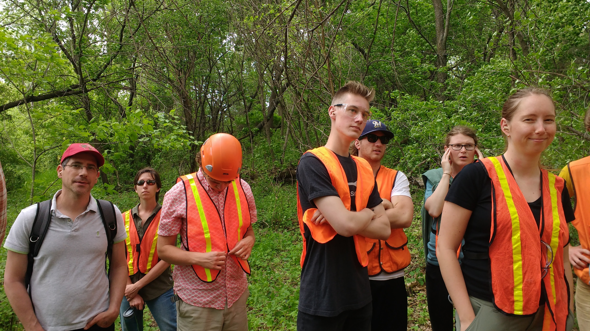
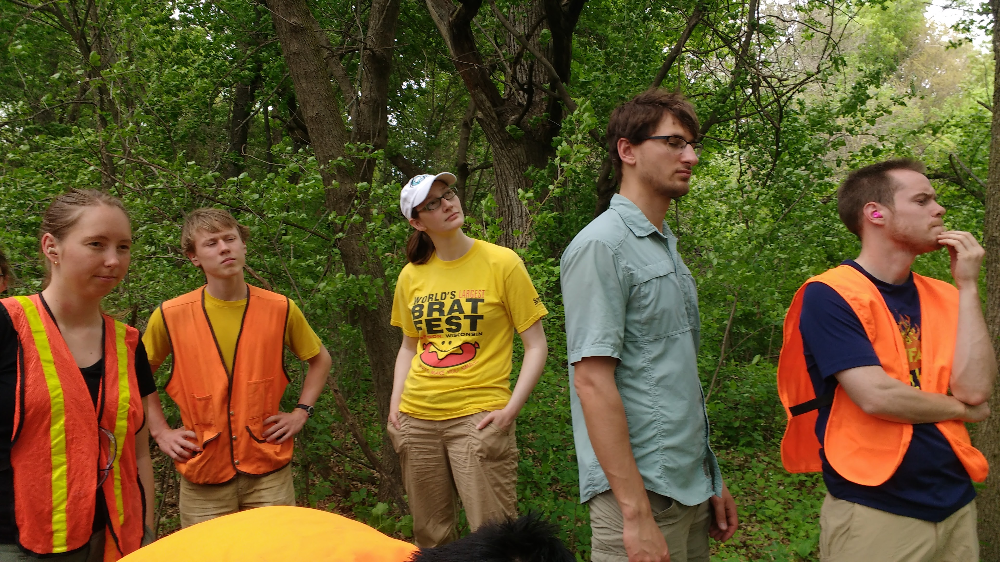
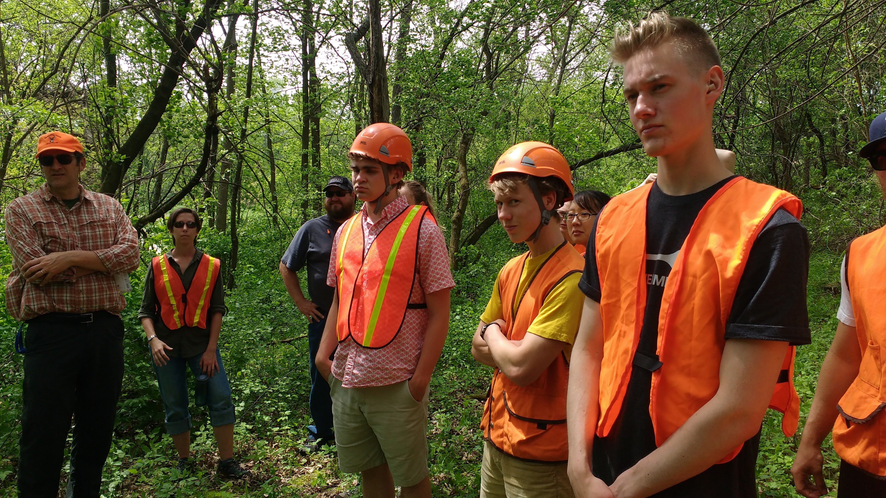
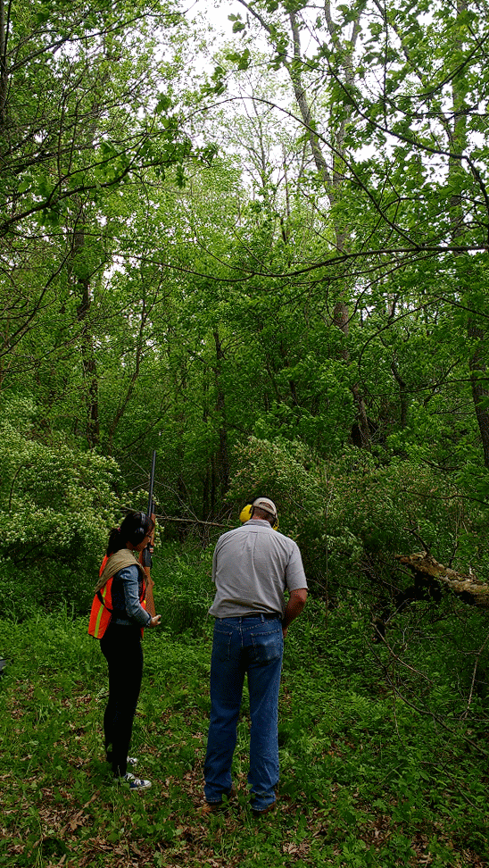
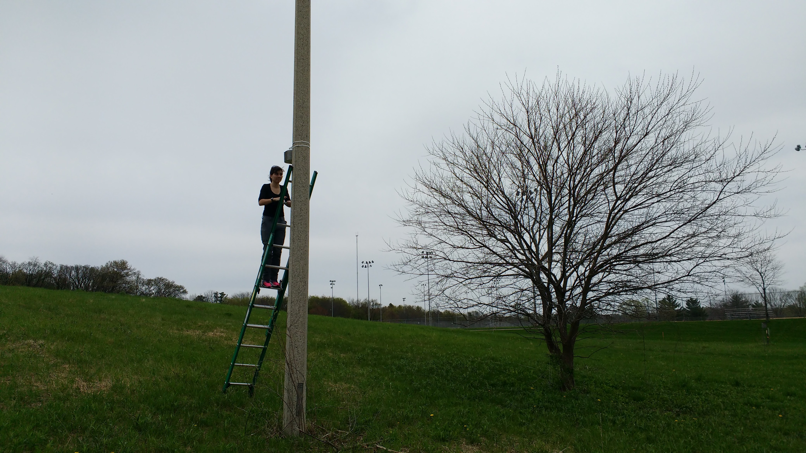
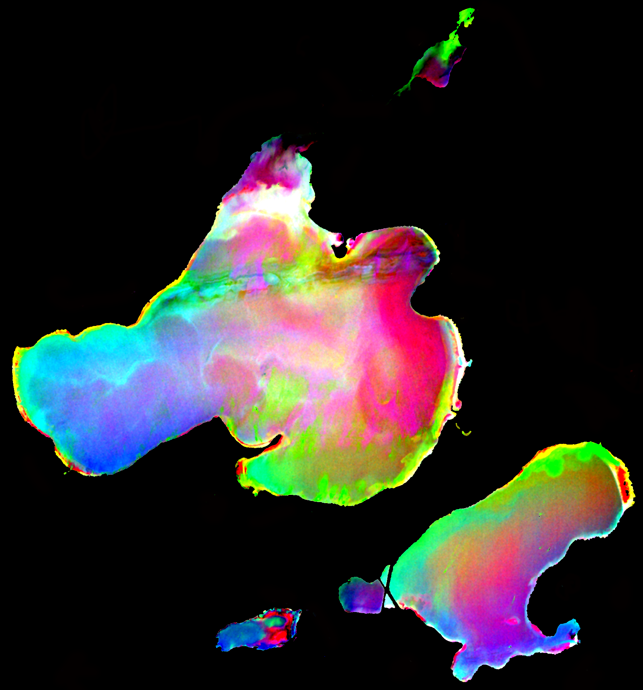
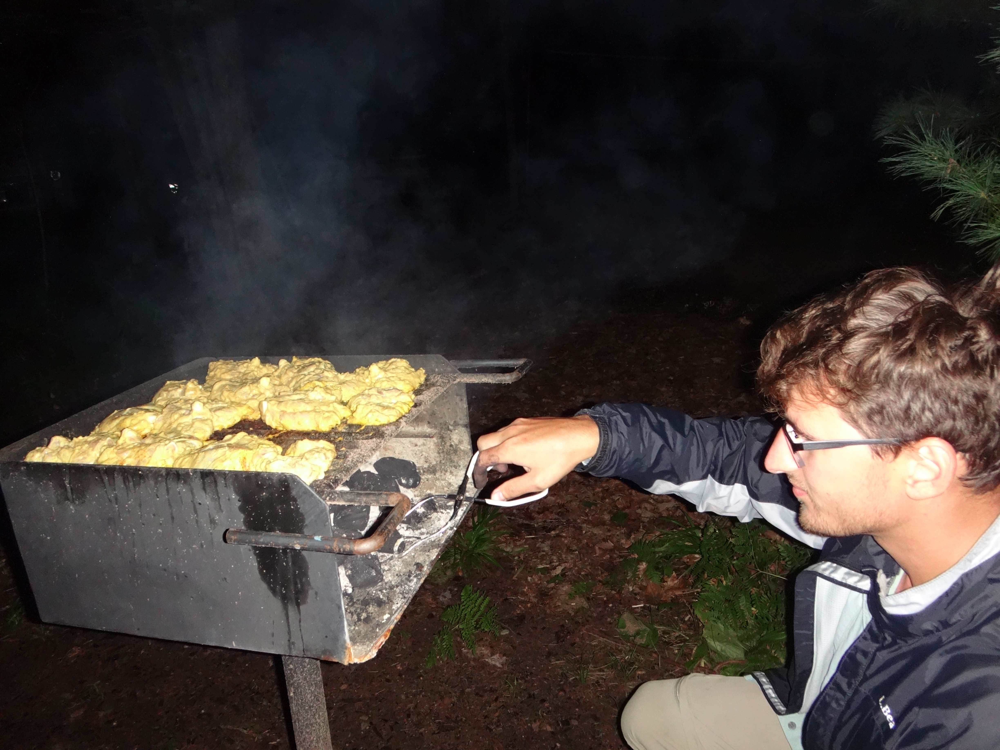
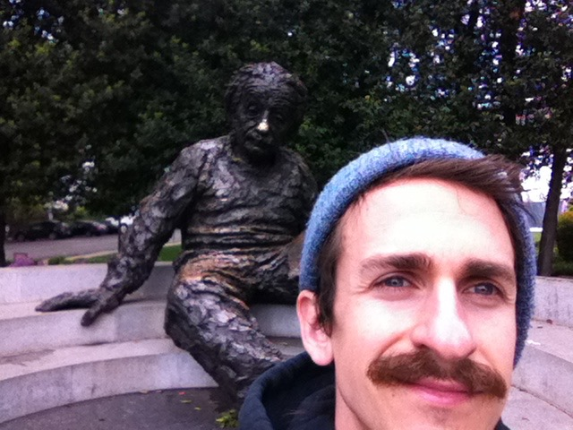
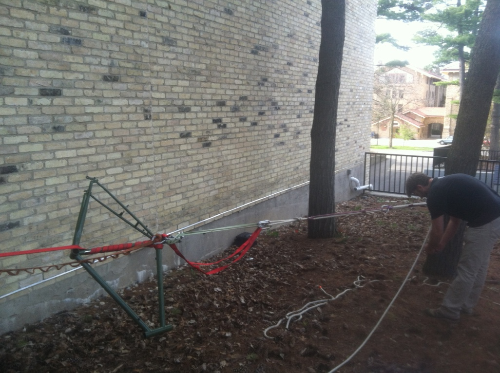
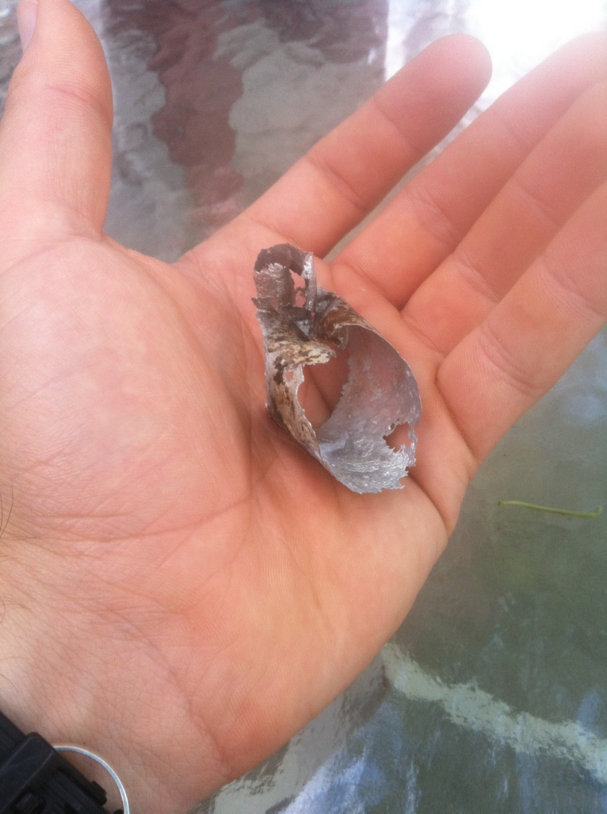

I was reading a paper about the susceptibility of urban forests to the
emerald ash borer ball_e_2007, when I came across a citation
from 1911:
Unfortunately, there are a limited number of tree species adapted to
the harsh growing conditions found in many cities, a fact lamented
early in the last century (Solotaroff 1911) and repeated to the
present day. Simply increasing diversity is of little benefit if
poorly adapted species are used merely to fulfill a quota.
This sparked a few questions:
Why don't we often see citations going back this far?
Just how old are some of the ideas in urban forestry, and who were
the first to publish them?
What insights from the past am I missing because I focus on more
recent publications?
Specifically to solotaroff_1911, what are the species that
we've tried to plant along streets, but have since abandoned?
And then I went down a little history rabbit hole.
The rabbit hole ended up being quite big, so I'll make a few blog
posts about what I found.
the ginkgos and the usda building didn't survive the McMillan plan
NASA Biodiversity and Ecological Forecasting 2018
[2018-04-26 Thu]
Team Meeting
[2018-03-08 Thu] Constrained regression for better tree growth equations
Say you plant a tree in a city. How big will it be in 20 years? You
might want to know because the ecosystem services provided by trees is
largely a function of their size - the amount of carbon stored in
their wood, the amount of shade and evapotranspiration providing
cooling, the amount of leaf area reducing sound and air pollution.
The Forest Service's urban tree database and allometric equations
provides equations to predict how tree size changes with age for the
purpose of quantifying ecosystem services. These equations are
empirical, that is to say, the researchers tested a bunch of equations
of different forms (linear, quadratic, cubic, log-log, …) and then
selected the form that had the best fit (lowest AIC). What is nice
about this method is that provides a good fit for the data. But they
don't take into account knowledge we have about how trees grow, and
they could end up making poor predictions on new observations,
especially if extrapolated. Here's an illustration of that problem:
Below is the quadratic function to predict diameter at breast height (DBH) from age.
\[
DBH = a(Age^2) + b(Age) + c + \epsilon
\]
where ε is the error term.
See the best fitting quadratic relationship between age and DBH for
Tilia americana below. This quadratic function does a good job
describing how dbh changes with age (better than any other form they
tested).
They found the quadratic curve gave the best fit, but
unfortunately the curve predicts that DBH begins declining at old age,
something we know isn't true. Diameter should increase monotonically
with age. The trouble is that for old trees, the number of samples is
small and the variance/error is large. A small random sample can
cause the best fitting curve to be decreasing, when we know that if we
had more data this wouldn't be the case. If we constrain the curve to
be non decreasing over the range of the data, we can be almost certain
to decrease the prediction error for new data.
How to do this?
We need the curve to be monotonically increasing over the range of our
data. Or, put another way, we need the x-intercept of the line of
symmetry of the quadratic function to be greater than the maximum
value of our x data. The line of symmetry is \(x = \frac{-b}{2a}\).
We need this to be greater than the maximum value of \(x\)
\[
\frac{-b}{2a} > \max(x)
\]
or equivalently
\[
2a\max(x) + b < 0
\]
The function lsei in the R package limSolve uses quadratic
programming to find the solution that minimizes the sum of squared
error subject to the constraint. I don't know the math behind this,
but it is very neat. This stats.stackoverflow question and the
limSolve vignette helped me figure this out.
Here is a toy example:
y <- c(15, 34.5, 39.6, 51.6, 91.7, 73.7)
x <- c(10L, 20L, 25L, 40L, 75L, 100L)
a <- data.frame(y = y, x = x)
m <- lm(y ~ x + I(x^2) - 1)
p <- data.frame(x = seq(0,105, 5))
p$y <- predict(m, p)
Just a quick note about using lsei, the signs are not what I
expected them to be in the G matrix. Maybe my math is wrong somewhere
or I don't fully understand the limSolve package. According to my
equation above the G matrix should have negative values, but the
solution is correct, so I'm going to go with that. If you read this
and find my error, please tell me.
Even after constraining the quadratic curve to be increasing over the
range of data, it's still not ideal. Extrapolation will certainly
give bad predictions because the curve begins decreasing. The
quadratic curve is nice because it is simple and easy and fits the
data well, but it is probably better to select a model form that is
grounded in the extensive knowledge we have of how trees grow. The
goal of the urban tree database to create equations specific to urban
trees which may have different growth parameters than trees found in
forests. But the basic physiology governing tree growth is the same
regardless of where the tree is growing, and it makes sense to use a
model form that considers this physiology, like something from here.
Even if I won't use this, I'm happy to have learned how to perform a
regression with a somewhat complex constraint on the parameters.
[2018-05-18 Fri] Update: I found out QP is a pretty standard thing in
linear algebra and that it's used to connect splines. Neat.
[2018-02-02 Fri] Commuting Across Mendota
The best way to get to work is by ice.
[2018-01-13 Sat] STANCon 2018
Stan is a probabilistic programming language used for bayesian
statistical inference. I got a student scholarship to attend the Stan
conference 2018 in Monterey this January.
The view from an airplane is always amazing:
Figure 12: Flying out of Madison, the isthmus and frozen lakesFigure 13: Flying out of Madison, picnic point and frozen lake Mendota
My personal highlight of the conference was meeting and chatting with
other attendees at family style meals. It is truly amazing the
variety of fields in which Stan is used. I had many productive and
enlightening conversations.
Figure 14: The main hall
Here are few more quick take-aways:
R packages rstanarm and brms can help you fit Stan models using R
syntax many people may be more comfortable with, such as the lme4
syntax for multilevel models. They can also output the stan code
for tweaking.
Fitting customized hierarchical models can be challenging in Stan
for a non expert like me. But the flexibility of these models is
attractive.
The regularized horseshoe prior is an option for shrinking
parameter estimates. I'd like to test it out for some of the
problems our lab faces. I don't think it would provide predictive
improvements, but it might enhance inference by identifying
important variables.
"Our work is unimportant." Andrew Gelman, the lead of the Stan
team and final speaker, emphasized this point, that bayesian
inference hasn't done much for humanity. It was a humbling and
thought-provoking comment to end three days of talking about
all the things that we use Stan for. It was a good point for
reflection and a reminder that I need to balance my compulsions to
do technically correct/advanced/obtuse science with my desire to do
science that actually gets done and contributes to society.
Gelman also mentioned that our work can be like a ladder:
Scientists must become statisticians to do science, statisticians
must become computational statisticians to do statistics,
computational statisticians must become software developers … and
so on. As a scientist who constantly feels like he's in over his
head with statistics, I appreciated this point. To achieve our
objectives we must stretch ourselves. It's never comfortable to
feel like we don't know what we are doing, but how else can we grow?
It was also very beautiful there:
Figure 15: Asilomar State BeachFigure 16: Flying home: Mountains in Utah. Incredible. We flew over the most incredible canyon too. I wish I knew where it was so I could visit on foot.
[2017-12-05 Tue] Statistics and Elections statistics
Statistics can be a powerful tool for identifying fraud in elections.
One of my favorite examples comes from the 2011 Russian election. See
the wikipedia article and this figure. The distribution of the votes
has very abnormal peaks at every 5%.
The Honduran election that just happened is also suspect to fraud and
the economist did a quick analysis to test for any sign of interference
in the voting. Check out their article here for the details. But
the gist of their work investigates changes in the distribution of
voting from one day to the next, with the premise being that
Hernández's party saw they were losing and stuffed the ballots near
the end of voting. I'm curious to see what comes of this. To me it
seems like a recount is in order.
Thank you statistics.
UPDATE
Maybe statistics is not that helpful. The U.S. recognizes Hernández
as president despite the irregularities. See the wikipedia article.
Perhaps statistics can identify a problem with a certain level of
confidence, but it cannot solve that problem. These two cases are
disappointing, and I'm curious if there are elections where fraud was
identified with statistics and this revelation led to a redo.
[2017-11-30 Thu] (Not) Remembering When Trees Disappear
One of the fun parts of my work this semester was knocking on doors
and asking people when nearby trees were removed. We wanted to see if
the removal of the trees affected the area's air temperature. The
residents were super helpful and many gave us very precise and
accurate dates for when trees were removed, especially for trees from
their own yards. However, many were not sure about street tree
removals and so we double checked dates with city Forester's records.
(A big thanks goes to to Robi Phetteplace, Marla Eddy and Brittany
Prosser for helping with this!) When I did the double checking, I was
surprised at how far off many of the resident's guesses were. Below
is a table which shows that a resident's best guess of when a street
tree was removed is usually off by several months, even when the
removal happened recently.
Residents Best Guess
Forester Records Show
Difference (apprx)
sep 2017
2017-07-12
2 months
sep 2017
2017-06-20
2-3 months
fall 2016
2016-06-30
3-4 months
didn't think tree ever existed
2016 spring
spring 2017
2016-03-15
1 year
before june 2015
2015-10-02
4 months
2016
2015-04-02
6 months
fall 2015
2015-01-09
9-11 months
Probably most surprising was a resident who, when asked about a
tree, said that no tree ever existed there.
On the other side of the memory spectrum, there was one resident, Sara
S, who could exactly date when a tree was removed because she had
photo evidence and a good story. Minutes before a hail storm blew
through, she told her daughter to move her car inside. Shortly after,
the tree the car was parked under split in half. It was removed the
next day.
I think the insight to be gained from these informal observations is
that people don't remember things unless they are important to them.
Even though we see these trees everyday, they aren't important enough
for us to remember when they go away. But I'm not judging, I can't
even remember my good friend's birthdays, so why should I expect people
to be able to recall when a tree was removed?
Our memories just aren't so good, and it's important to remember that
when doing research.
[2017-10-18 Wed] Flyer to get citizen help with urban forest research. UrbanHeatIsland
This is a beautiful flyer created by Cheyenne to leave on the doors of
houses who don't answer when we knock to find out when a nearby tree
was removed. As of today we've had a couple responses that have given
us the exact date trees were removed. Thank you Sara Sandberg and
Mike Bussan!
[2017-10-12 Thu] Madison East AP Environmental Studies Field Trip
I got to help students in Madison East's AP Environmental studies on
their field trip to the Madison School Forest. With 85 students and
just one teacher, it was a big undertaking, but their teacher, Angie
Wilcox-Hull, did an awesome job organizing.
They learned how identify common Wisconsin tree species and also did a
lab on carbon in forests. Students used a clinometer and diameter at
breast height tape to measure forest trees, they estimated carbon
content of the trees, and they compared this to the carbon emissions
caused by their transportation to and from school. As always it was
great to work with high school students and there were a lot of great
questions and points brought up. Here are four that were especially
salient to me:
Students realized that we used the equation of a cylindar to
approximate the volume of a tree, but a cone is usually more
appropriate.
When we talked about finding the volume of wood in leaning trees,
one student used his knowledge of calculus to tell me it wasn't
quite so hard. See here. I wonder if foresters use that idea for
leaning trees.
Carbon storage is not the same as carbon sequestration
While we measured individual trees, carbon stored per area of land
may be more interesting for managers.
Figure 17: Being outside is a great part of doing a forestry lab. Photo: Angie Wilcox-Hull
[2017-05-24 Wed] Second Trip to Washington, DC for NASA's Biodiversity and Ecological Forecasting Team Meeting nasatravel
Figure 18: National Museum of African American History and Culture
[2017-05-16 Tue] Shotgun Training




Figure 22: Zhihui
[2017-04-25 Tue] Collecting Urban Heat Island Data with Carly Ziter UrbanHeatIsland

[2017-04-24 Mon] Using OpenBLAS to speed up matrix operations in R (linux)
I use the foreach and doParallel packages in R to speed up my work
that can be easily parallelized. However, sometimes work can't be
easily parallelized and things are slower than I'd like. An example
of this might be fitting a single very large and complex model. Andy
Finley, who resently stopped by UW-Madison to give a workshop on
hierarchical modeling, taught us about OpenBLAS as a way to speed up
matrix operations in R. Here are the notes about computing from the
workshop.
BLAS is Basic Linear Algebra Subprograms. R and other higher level
languages call BLAS to do matrix operations. There are other versions
of BLAS, such as OpenBLAS, which are faster than the default BLAS that
comes with R because they are able to take advantage of multiple cores
in a machine. This is the extent of my knowledge on the topic.
Below is how I installed OpenBLAS locally on our linux server and
pointed R to use the OpenBLAS instead of its default BLAS. A
benchmark test follows.
Getting OpenBLAS
cd src # move to src directory to download source code
wget http://github.com/xianyi/OpenBLAS/archive/v0.2.19.tar.gz # your version may be different
tar xzf v0.2.19.tar.gz
cd OpenBLAS-0.2.19/
make clean
make USE_OPENMP=1 #OPENMP is a threading library recommended by Andy Finley
mkdir /home/erker/local
make PREFIX=/home/erker/local install # You will have to change your install location
Pointing R to use OpenBLAS
I have R installed in my ~/local directory. libRblas.so is the default
BLAS that comes with R. For me it is located in ~/local/lib/R/lib.
Getting R to use OpenBLAS is as simple as changing the name of the
default BLAS and creating a link in its place that points to OpenBLAS:
Deleting the link and reverting the name of the default BLAS, will
make R use the default BLAS again. Something like:
rm libRblas.so
mv libRblas_default.so libRblas.so
Benchmark Test
I copied how to do this benchmark test from here. The benchmark test
time was cut from about 146 to about 38 seconds on our server. This is
a very significant speed up. Thank you OpenBLAS and Andy Finley.
Default BLAS
curl http://r.research.att.com/benchmarks/R-benchmark-25.R -O
cat R-benchmark-25.R | time R --slave
Loading required package: Matrix
Loading required package: SuppDists
Warning messages:
1: In remove("a", "b") : object 'a' not found
2: In remove("a", "b") : object 'b' not found
R Benchmark 2.5
===============
Number of times each test is run__________________________: 3
I. Matrix calculation
---------------------
Creation, transp., deformation of a 2500x2500 matrix (sec): 0.671333333333333
2400x2400 normal distributed random matrix ^1000____ (sec): 0.499666666666667
Sorting of 7,000,000 random values__________________ (sec): 0.701666666666667
2800x2800 cross-product matrix (b = a' * a)_________ (sec): 10.408
Linear regr. over a 3000x3000 matrix (c = a \ b')___ (sec): 4.877
--------------------------------------------
Trimmed geom. mean (2 extremes eliminated): 1.31949354763381
II. Matrix functions
--------------------
FFT over 2,400,000 random values____________________ (sec): 0.220333333333334
Eigenvalues of a 640x640 random matrix______________ (sec): 0.717666666666664
Determinant of a 2500x2500 random matrix____________ (sec): 3.127
Cholesky decomposition of a 3000x3000 matrix________ (sec): 4.15
Inverse of a 1600x1600 random matrix________________ (sec): 2.364
--------------------------------------------
Trimmed geom. mean (2 extremes eliminated): 1.74407855808281
III. Programmation
------------------
3,500,000 Fibonacci numbers calculation (vector calc)(sec): 0.503999999999981
Creation of a 3000x3000 Hilbert matrix (matrix calc) (sec): 0.259999999999991
Grand common divisors of 400,000 pairs (recursion)__ (sec): 0.301000000000007
Creation of a 500x500 Toeplitz matrix (loops)_______ (sec): 0.0393333333333317
Escoufier's method on a 45x45 matrix (mixed)________ (sec): 0.305999999999983
--------------------------------------------
Trimmed geom. mean (2 extremes eliminated): 0.288239673174189
Total time for all 15 tests_________________________ (sec): 29.147
Overall mean (sum of I, II and III trimmed means/3)_ (sec): 0.87211888350174
--- End of test ---
144.64user 0.94system 2:25.59elapsed 99%CPU (0avgtext+0avgdata 454464maxresident)k
0inputs+0outputs (0major+290577minor)pagefaults 0swaps
OpenBLAS
cat R-benchmark-25.R | time R --slave
Loading required package: Matrix
Loading required package: SuppDists
Warning messages:
1: In remove("a", "b") : object 'a' not found
2: In remove("a", "b") : object 'b' not found
R Benchmark 2.5
===============
Number of times each test is run__________________________: 3
I. Matrix calculation
---------------------
Creation, transp., deformation of a 2500x2500 matrix (sec): 0.689666666666667
2400x2400 normal distributed random matrix ^1000____ (sec): 0.499
Sorting of 7,000,000 random values__________________ (sec): 0.701
2800x2800 cross-product matrix (b = a' * a)_________ (sec): 0.163000000000001
Linear regr. over a 3000x3000 matrix (c = a \ b')___ (sec): 0.228
--------------------------------------------
Trimmed geom. mean (2 extremes eliminated): 0.428112796718245
II. Matrix functions
--------------------
FFT over 2,400,000 random values____________________ (sec): 0.224333333333332
Eigenvalues of a 640x640 random matrix______________ (sec): 1.35366666666667
Determinant of a 2500x2500 random matrix____________ (sec): 0.140666666666667
Cholesky decomposition of a 3000x3000 matrix________ (sec): 0.280333333333332
Inverse of a 1600x1600 random matrix________________ (sec): 0.247000000000001
--------------------------------------------
Trimmed geom. mean (2 extremes eliminated): 0.249510313157146
III. Programmation
------------------
3,500,000 Fibonacci numbers calculation (vector calc)(sec): 0.505000000000001
Creation of a 3000x3000 Hilbert matrix (matrix calc) (sec): 0.259333333333333
Grand common divisors of 400,000 pairs (recursion)__ (sec): 0.299333333333332
Creation of a 500x500 Toeplitz matrix (loops)_______ (sec): 0.039333333333334
Escoufier's method on a 45x45 matrix (mixed)________ (sec): 0.256999999999998
--------------------------------------------
Trimmed geom. mean (2 extremes eliminated): 0.271216130718114
Total time for all 15 tests_________________________ (sec): 5.88666666666666
Overall mean (sum of I, II and III trimmed means/3)_ (sec): 0.30712894095638
--- End of test ---
176.85user 12.20system 0:38.00elapsed 497%CPU (0avgtext+0avgdata 561188maxresident)k
0inputs+0outputs (0major+320321minor)pagefaults 0swaps
Next things
From comments here, I have heard that OpenBLAS doesn't play well with
foreach and doParallel. I will have to test these next. If it is
an issue, I may have to include a shell code chunk in a literate program
to change between BLAS libraries.
[2017-02-28 Tue] Application Essay: Catalyzing Advocacy in Science and Engineering: 2017 Workshop
I just applied to the CASE 2017 Workshop in Washington, DC. The
application process led to some interesting thoughts, so I thought I'd
share the essay.
Update [2017-03-09 Thu]: I was not accepted.
Application
"How do we know the earth is 4.5 billion years old?" I loved asking
my students this question when I taught high school science. The
students (and I) were hard pressed to explain how we know this to be
true. Most of us don't have the time to fully understand radiometric
dating, let alone collect our own data from meteorites to verify the
earth's age. So unless it's a topic we can investigate ourselves, we
must simply trust that scientists are following the scientific method
and evaluate their results within the context of our own experience.
Trust between scientists and the public is therefore the necessary
foundation upon which our society accepts scientific research,
incorporates it into policy, and supports more science. The
communication of science's benefits to society maintains this trust.
Unfortunately, the public and scientists disagree in many critical
areas of research, such as genetic modification, climate change,
evolution, vaccinations, and the age of the earth (1)(2). I believe
scientists must do more to directly address these discrepancies.
As a scientist I have the incredible opportunity to conduct research
that I think will improve society, and I'm honored that the public
pays me to do it. I'm making a withdrawal from the bank of public
trust and feel strongly that I need to pay it back with interest. I
see scientific communication as the way to do so. Effective
scientific communication goes way beyond publishing quality work in
reputable journals and requires that we place our findings into the
public consciousness. I have taught at the university and have led a
few guest labs at an area high school, but I want to have a greater
impact. The CASE 2017 workshop excites me with the opportunity to
learn how to make this impact.
My hope is that CASE will orient me to the landscape of science
advocacy, policy, and communication. Despite benefiting from federal
funds for science, I am mostly ignorant of how our nation allocates
resources to research, and I look forward to CASE demystifying this
process. I hope to learn effective methods to communicate science with
the public and to discuss with elected officials the value of research
for crafting smart policy.
Because scientists understand their work best, they are best suited to
advocate for it. CASE will provide a unique opportunity to learn
how to be an advocate for science and a leader in strengthening the
trust between the scientific community and the public whom we serve.
If selected, I would like to work with the other selected graduate
student and the graduate school's office of professional development
to host a mini-workshop to bring the knowledge and skills from
CASE to our campus. I'd like to replicate the Capitol Hill visits at a
state level and work to get more graduate students engaged with
elected officials from across the state.
[2016-10-27 Thu] OBSOLETE:Installing R, gdal, geos, and proj4 on UW Madison's Center for High Throughput Computing
NOTE
This post is obsolete. Use Docker as the chtc website now recommends
R is the language I use most often for my work. The spatial packages
of R that I use very frequently like rgdal, rgeos, and gdalUtils
depend on external software, namely gdal, proj4, and geos.
Here I show how I installed gdal, proj4, and geos on chtc, and pointed
the R packages to these so that they install correctly.
The R part of this tutorial comes from chtc's website. Their site
should be considered authoritative. I quote them heavily below. My
effort here is to help people in the future (including myself) to
install gdal etc. on chtc.
Create the interactive submit file. Mine is called interactive_BuildR.sub
I save it in a directory called "Learn_CHTC"
universe = vanilla
# Name the log file:
log = interactive.log
# Name the files where standard output and error should be saved:
output = process.out
error = process.err
# If you wish to compile code, you'll need the below lines.# Otherwise, LEAVE THEM OUT if you just want to interactively test!
+IsBuildJob = true
requirements = (OpSysAndVer =?= "SL6") && ( IsBuildSlot == true )
# Indicate all files that need to go into the interactive job session,# including any tar files that you prepared:# transfer_input_files = R-3.2.5.tar.gz, gdal.tar.gz# I comment out the transfer_input_files line because I download tar.gz's from compute node# It's still important to request enough computing resources. The below# values are a good starting point, but consider your file sizes for an# estimate of "disk" and use any other information you might have# for "memory" and/or "cpus".
request_cpus = 1
request_memory = 1GB
request_disk = 1GB
queue
transfer interactive submit file to condor submit node
change erker to your username and if you don't use submit-3, change
that too. You'll have to be inside the directory that contains
"interactive_BuildR.sub" for this to work.
Each install is slightly different, but follows the same pattern.
This worked for me on this date, but may not work in the future.
GDAL: Download, configure, make, make install gdal, then tar it up
wget http://download.osgeo.org/gdal/gdal-1.9.2.tar.gz # download gdal tarball
tar -xzf gdal-1.9.2.tar.gz # unzip it
mkdir gdal # create a directory to install gdal intodir_for_build=$(pwd) # create a variable to indicate this directory (gdal doesn't like relative paths)cd gdal-1.9.2 # go into the unzipped gdal directory
./autogen.sh # run autogen.sh
./configure --prefix=$dir_for_build/gdal # run configure, pointing gdal to be installed in the directory you just created (You'll have to change the path)
make
make install
cd ..
tar -czf gdal.tar.gz gdal #zip up your gdal installation to send back and forth between compute and submit nodes
Proj4: Download, configure, make, make install proj4 then tar it up
wget https://github.com/OSGeo/proj.4/archive/master.zip
unzip master.zip
mkdir proj4
cd proj.4-master
./autogen.sh
./configure --prefix=$dir_for_build/proj4
make
make install
cd ..
tar -czf proj4.tar.gz proj4
Geos:
wget http://download.osgeo.org/geos/geos-3.6.0.tar.bz2
tar -xjf geos-3.6.0.tar.bz2 # need to use the "j" argumnet because .bz2 not gz
mkdir geos
cd geos-3.6.0
./configure --prefix=$dir_for_build/geos # no autogen.sh
make
make install
cd ..
tar -czf geos.tar.gz geos
Add libs to LD_LIBRARY_PATH
I don't actually know what this path is exactly, but adding gdal/lib,
proj4/lib, and geos/lib to the LD_LIBRARY_PATH resolved errors I had
related to files not being found when installing in R. For rgdal the error was
Error in dyn.load(file, DLLpath = DLLpath, ...) :
unable to load shared object '/home/erker/R-3.2.5/library/rgdal/libs/rgdal.
and lines like this:
...
./proj_conf_test: error while loading shared libraries: libproj.so.12: cannot open shared object file: No such file or directory
...
proj_conf_test.c:3: error: conflicting types for'pj_open_lib'
/home/erker/proj4/include/proj_api.h:169: note: previous declaration of 'pj_open_lib' was here
./proj_conf_test: error while loading shared libraries: libproj.so.12: cannot open shared object file: No such file or directory
...
For rgeos the error was
"configure: error: cannot run C compiled programs"
Run this to fix these errors
exportLD_LIBRARY_PATH=$LD_LIBRARY_PATH:$(pwd)/gdal/lib:$(pwd)/proj4/lib # this is to install rgdal properlyexportLD_LIBRARY_PATH=$LD_LIBRARY_PATH:$(pwd)/geos/lib # and rgeos
R: download, untar and move into R source directory, configure, make, make install
As of [2016-10-25 Tue] R 3.3.0 or higher isn't supported on chtc
wget https://cran.r-project.org/src/base/R-3/R-3.2.5.tar.gz
tar -xzf R-3.2.5.tar.gz
cd R-3.2.5
./configure --prefix=$(pwd)
make
make install
cd ..
Install R packages
The installation steps above should have generated an R installation
in the lib64 subdirectory of the installation directory. We can start
R by typing the path to that installation, like so:
R-3.2.5/lib64/R/bin/R
This should open up an R console, which is how we're going to install
any extra R libraries. Install each of the library packages your code
needs by using R's install.packages command. Use HTTP, not HTTPS for
your CRAN mirror. I always download from wustl, my alma mater. For rgdal and rgeos you need to
point the package to gdal, proj4 and geos using configure.args
Change your vector of packages according to your needs.
Save and close the file. (In nano, this will be CTRL-O, followed by CTRL-X.)
Move R installation to main directory and Tar so that it will be returned to submit node
mv R-3.2.5/lib64/R ./
tar -czvf R.tar.gz R/
Exit the interactive job
exit
Upon exiting, the tar.gz files created should be sent back to your
submit node
[2016-09-23 Fri] Cool Science Image contest

Figure 24: MNF transformation of AVIRIS hyperspectral imagery over lakes Mendota, Monona, and Wingra
I created this image of Madison's lakes using hyperspectral imagery
from NASA's AVIRIS sensor for the Cool Science Image Contest. I threw
it together the week before the contest and was very pleased to be
selected, but I wish that it had been more related to the science that
I do. It is a minimum noise fraction transformation which is a way to
transform/condense the data from the ~250 bands into the 3 visible
channels (rgb) for maximum information viewing. Originally I intended
to create an image over land, but had great difficulty getting the
mosaicing of the 3 flightlines to be seamless. You can see the band
across the northern part of lake Mendota from fox bluff to warner bay
that is due to image processing, not something real in the water. The
image is no doubt cool, but I wish I could say more what the colors
meant (If you're a limnologist and see some meaning, please let me
know). I think that pink may be related to sand, and green to bright
reflections on the water. There's probably some algae detection going
on too. My goal for next year is to make an image that is heavier on
the science and still very cool.
[2016-09-20 Tue] Field work in northern Wisconsin
Field work provides the opportunity to be outside, help out on
lab-wide projects, and to learn about new research that isn't exactly
in my wheelhouse. September 8-10 I went to the north woods to help
collect foliar samples as part of a NEON and Townsend lab project to
ultimately predict foliar traits such as morphology, pigments, and
other chemical constituents from hyperspectral imagery to create maps
of these traits. This was the first year of a five year project.
There's much more to the science behind the goal. But the aim of this
post is not to explain all that, but rather, to share some images and
the joy of being in the north woods.
Figure 25: Trout Lake Research Station, our lodging

Figure 26: Jablonski grilling Aditya's Famous ChickenFigure 27: Always excited for field workFigure 28: Always excited for field workFigure 29: Aditya fake shooting leaves (for retrieval)Figure 30: John fake writingFigure 31: Larch StandFigure 32: NEON's Flux Tower. Measuring the exhange of carbon between atmosphere and biosphere. Sweet.
Flux tower of Ankur Desai's research group, much smaller than NEON's. Maples creating lovely dappled light.
[2016-08-02 Tue] Making this website orgmode
I use emacs org-mode as the core application for my research. It
makes sense to use the great org publishing features to create a
website without having to learn many new skills. I had considered
using jekyll, but ultimately realized that I could make a website that
is just as beautiful and functional with emacs org-mode.
I've looked at tons of websites made with org-mode. I like Eric
Schulte's best for an academic personal page, and I wanted to use the
org-info.js for a blog with keyboard shortcuts for navigation and
search.
If you're not familiar with org mode, check it out.
If you are already familiar with org mode, spend twenty minutes
reading about exporting to html and publishing. The manual is pretty
clear. Once you have a published webpage, check out some css
stylesheets from other org sites that you like. Mine is a modified
version of the stylesheet of eric schulte, who I asked permission from
to use.
I spent no more than 3 hours setting up the site. Deciding that this was the
approach I wanted to take and generating the content took a couple
days.
You can clone the github repo to see how I have it set up.
It is great to be able to work on the content of the website in a very
familiar way and export it to the internet with one command. Amazing.
[2016-08-02 Tue] Trip to Washington, DC for NASA's Biodiversity and Ecological Forecasting Team Meeting nasatravel

Figure 33: Albert Einstein Memorial
[2016-08-01 Mon] Removing Stuck Aluminum Seatpost from a Steel Frame bike
In short:
Use a sodium hydroxide solution with proper protection and
ventilation. Be patient. Use rubber stoppers to block holes in frame (bottom bracket
and water bottle braze-ons.
In long:
My seatpost had been stuck in my steel frame for years. Fortunately
it was at the proper height, so it didn't bother me. When my headset
broke and needed to be replaced, I figured I'd take care of the
seatpost at the same time. I wasted an incredible amount of time
trying to remove the seatpost and ruined my paint in the process which
required a costly repowdering. This post is to share my experience so
that you don't have to go through the same thing.
What didn't work:
Freezing
Ammonia
Pipe wrench with 5 foot bar
combinations of the above
Tying it between two trees and trying to pull it apart with 3 men and a
6-1 mechanical advantage system.

Figure 34: We pulled hard, but failed
What did work:
Remove everything from the frame except the seatpost
Use a hacksaw to remove seat and create hole to pour solution
down. Leave as much of the post as possible to reduce splashing,
while still creating a large hole to pour solution
down. post in frame, side view
Stop up bottom bracket and braze-ons (any holes that will let the
sodium hydroxide leak out of the seat tube) with rubber or cork
stoppers. I got many of different sizes for less than a dollar at
the hardware store.
Place frame in well ventilated area on something to catch any
spills (I used a plastic sled in my driveway). setup
Add sodium hydroxide salt to water (not water to salt). I did this
in an old milk jug. Sodium hydroxide is sold at your local
hardware store as lye or drain cleaner. Check chemical composition
to verify it is NaOH. I didn't measure the concentration of the
solution that I used, but you don't want it to be so concentrated
that it bubbles violently out of seat tube and destroys your paint. Also,
the dissolving of NaOH is exothermic and the milk jug will get
quite warm, or hot if it's very concentrated.
Pour solution into seat tube. The solution needs to be up to the
top of the tube so that the part of the post inside the tube will
dissolve, but filling it up this high risks spashes. Fill up the
tube part way to make sure there isn't a ton up bubbling and
splashing, then fill up to top of tube (not post). If you didn't saw off too
much of the post, this length of post sticking out of tube will
help give you a splash buffer.
I cut mine too short and the paint was destroyed
Be patient. My seat post wall was quite thick, at least 2 mm.
This will take a long time to dissolve. Wait until the solution is
finished reacting with aluminum (you can hear the production of
hydrogen gas), which may take a few hours. Then pour out the
solution from your frame and dispose of the dark grey liquid
(because I wasn't sure if the NaOH was completely used, I added
vinegar in an attempt to neutralize the base).
Repeat steps 5-7 until the post is completely dissolved or you
can pull the post out.

Figure 35: This is all that was left
I had apex custom coating in Monona, WI repaint my frame.
They did a great job and the price was lower than everywhere else I
looked, but it still wasn't cheap. Don't let the NaOH stay on your
frame long!


{kind=link}


{kind=link}
{kind=link}
{kind=link}
{kind=link}